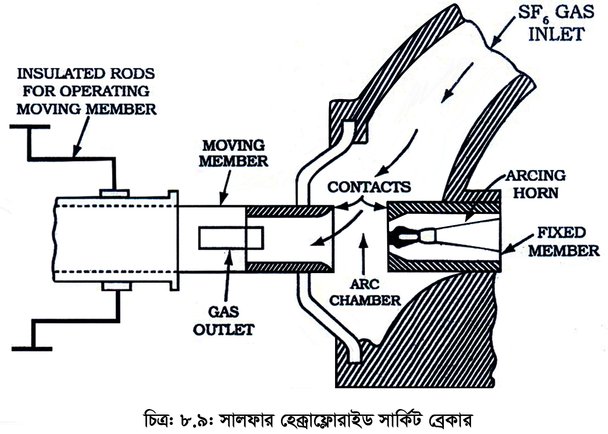

<div class="content">
    <div class="scroller">
        <p class="page-no">146</p><br><br>
        <h2></h2>
        <div style="margin-bottom: 24px;">
            <h4 class="topic-title-no">(ঙ) গ্যাস (সালফার হেক্সাফ্লোরাইড, SF<sub>6</sub>) সার্কিট ব্রেকার</h4>
            <h4 class="topic-title"></h4>
            <p>
            </p>
        </div>

        <div style="margin-bottom: 24px;">
            <h4 class="topic-title-no">(Gas (Sulpher-Hexaflouride, SF<sub>6</sub>) Circuit Breaker)</h4>
            <h4 class="topic-title"></h4>
            <p>
            </p>
        </div>

        <p style="padding: 0;">
            <b>গঠন ও কার্যপ্রণালি :</b> নিচের চিত্রে সালফার হেক্সাফ্লোরাইড (SF<sub>6</sub> ) সার্কিট ব্রেকার দেখানো। হয়েছে এর আকিং চেম্বারে স্থির এবং চলমান কণ্টাক্ট থাকে। একটি SF6 গ্যাস রিজারভার এর সাথে আর্কিং চেম্বার সংযুক্ত থাকে। ফাঁপা সিলিন্ডার আকৃতির স্থির কণ্টাক্টটি আর্ক হর্নের সাথে স্থাপন করা হয়। চলমান কণ্টাকটি আয়তাকার হোল-বিশিষ্ট ফাঁপা সিলিন্ডার আকৃতির হয়। আয়তাকার হোল সাইডে থাকে। এর মাধ্যমে SF<sub>6</sub> গ্যাস বের হয়ে যেতে পারে। স্থির কণ্টাক্ট, চলমান কণ্টাক্ট এবং আকিং হর্নের মাথায় আর্ক রেজিস্ট্যান্স পদার্থের (কপার টাংস্টেন) প্রলেপ দেওয়া থাকে।
        </p><br/><br/>

        <p class="c-align">
            
        </p>
        <p class="c-align">চিত্র- ৮.৯: সালফার হেক্সাফ্লোরাইড সার্কিট ব্রেকার
            <span class="tooltip_my">
                <i class="fa fa-play-circle video-class" videosrc="videos/146/146-anim-112.mp4" style="font-size: 20px;" aria-hidden="true"></i>
                <span class="tooltiptext">click here to see the video</span>
            </span>
        </p>

        <p style="padding: 0;">
            সালফার হেক্সাফ্লোরাইড (SF<sub>6</sub>) হচ্ছে ডাই-ইলেকট্রিক এবং আর্ক নির্বাপণের বৈশিষ্ট্যসম্পন্ন নিষ্ক্রিয় গ্যাস। এটি ইলেকট্রোনেগেটিভ ধর্মী। এ গ্যাস ফ্রি-ইলেকট্রন শোষণ করার ক্ষমতা রাখে। এ নীতির উপর ভিত্তি করেই ঝঋ৬ সার্কিট ব্রেকার কাজ করে। স্বাভাবিক অবস্থায় যখন ব্রেকার বন্ধ থাকে, তখন কণ্টাক্ট-এর চতুপার্শ্বে গ্যাসের চাপ ২-৮ কেজি/বর্গ সে.মি. থাকে। অস্বাভাবিক অবস্থায় স্থির কণ্টাক্ট হতে চলমান কণ্টাক্ট বিচ্ছিন্ন হয়। এ সময় রিজারভার হতে SF<sub>6</sub> গ্যাস 14 কেজি/ বর্গ সে.মি. চাপে আর্কিং চেম্বারে আসে। এ গ্যাস ফ্রি-ইলেকট্রন শোষণ করে। এতে স্থির ও চলমান কণ্টাক্টের মধ্যবর্তী মাধ্যমের ডাই-ইলেকট্রিক শক্তি বৃদ্ধি পায়। ফলে আর্ক নির্বাপিত হয়। আর্ক নির্বাপণ শেষে স্প্রিং এর মাধ্যমে পুনরায় ভালভ বন্ধ করে রাখা হয়।
        </p><br/><br/>

        <p style="padding: 0;"><b>সালফার হেক্সাফ্লোরাইড, Sulpher-Hexaflouride) এর বৈশিষ্ট্যসমূহ:</b></p><br/>
        <p style="padding: 0;">
            বিশুদ্ধ সালফার হেক্সাক্লোরাইড একটি নিষ্ক্রিয় ভারী গ্যাস। এটি 9<sup>o</sup>C (48<sup>o</sup>F তাপমাত্রা এবং 220 পিএসআই, জি) তাপমাত্রা পর্যন্ত গ্যাসীয় অবস্থায় থাকে। এর ঘনত্ব বায়ুর চেয়ে 5 গুণ বেশি এবং তাপ সঞ্চালন ক্ষমতা বায়ুর তুলনায় 1.5 গুণ বেশি। তাছাড়া এটি অদাহ্য, অবিষাক্ত, গন্ধহীন এবং ইলেকট্রোনেগেটিভ গ্যাস্ সর্বোপরী এটি উত্তম ডাই ইলেকট্রিক শক্তি সম্পন্ন ও অগ্নি নির্বাপক পদার্থ। উচ্চ চাপে এর ডাই ইলেকট্রিক স্ট্রেংথ বৃদ্ধি পায়।
        </p><br/><br/>

        <p style="padding: 0;"><b>SF<sub>6</sub> সার্কিট ব্রেকারের সুবিধা এবং অসুবিধাসমূহ :</b></p><br/>
        <p style="padding: 0;"><b>সুবিধাসমূহ (Advantages):</b></p><br/><br>

        <p style="padding: 0;">১।    SF<sub>6</sub> গ্যাসের আর্কিং নির্বাপণ ক্ষমতা উন্নত বিধায় আর্কিং টাইম কম লাগে। </p><br/>
        <p style="padding: 0;">২।    বাতাসের চেয়ে SF<sub>6</sub> গ্যাসের ডাই-ইলেকট্রিক শক্তি 2 হতে 3 গুণ বিধায় বেশি কারেন্টের ক্ষেত্রে এটি ব্যবহৃত হয়।  </p><br/>
        <p style="padding: 0;">৩।    অপারেশনের সময় এর শব্দ (Noise) হয় না ও বাইরের বাতাসে কোনো কিছু পরিত্যাগ করে না। </p><br/>
        <p style="padding: 0;">৪।    আর্দ্রতাজনিত অসুবিধা হয় না। </p><br/>
    </div>
</div>